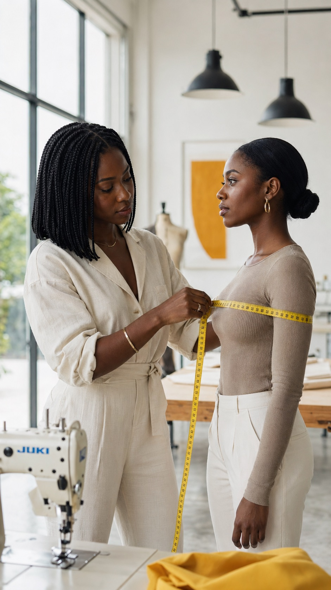
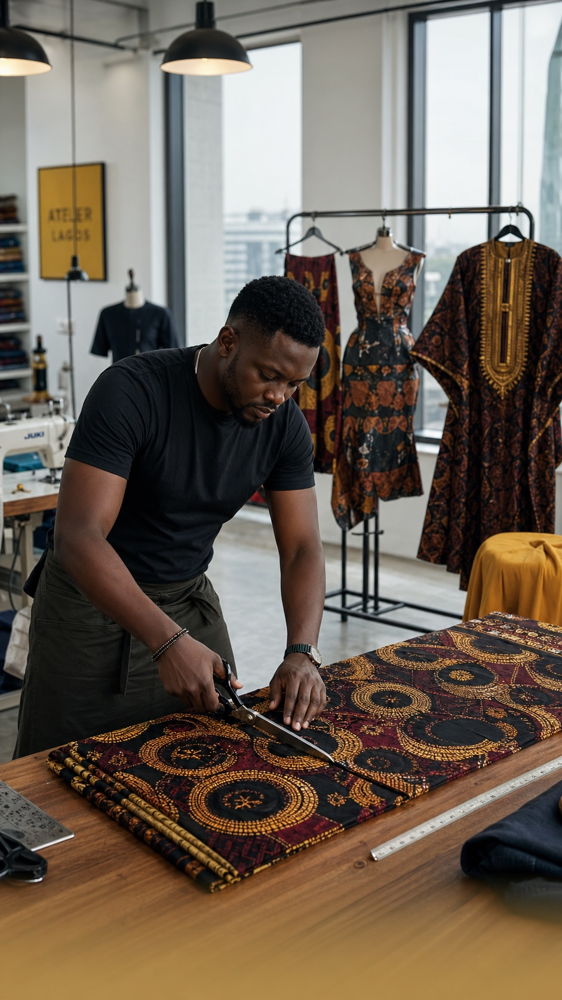

The current layout (variant A) drops a 9:16 photo into a 280×240 landscape box and crops it hard — that's the "boxy" feeling you saw on device. Variants B–E let the photo breathe in different ways. Pick the variant you want shipped, and I'll wire it into the Compose code.
What's shipping today. 280×240 dp rounded rectangle with ContentScale.Crop. Forces a portrait photo into a landscape box, so faces and context get chopped.
Decent for icons, weak for real photography.


Same framing concept as A, but the photo card is 4:5 portrait (260×325 dp) instead of 7:6 landscape. The photo is no longer fighting its own aspect ratio — faces and bodies fit naturally. Most conservative win.
Photo fills the top ~60% of the screen edge-to-edge, no border or rounding at the top. A white sheet rises from the bottom (28dp top corners) holding the title, body, dots, and CTA — left-aligned magazine style. The Calm / Headspace / Notion / Reflect onboarding pattern. Most premium-feeling without going fully immersive.
Photo fills the entire screen edge-to-edge. A bottom-up dark gradient handles legibility for the title and body, which sit on top in white. Most aspirational — feels like a premium app intro (Spotify, Tinder Premium). Locks UI to dark text-on-photo, so trade-off is contrast control.
Tall portrait photo (4:5) wrapped in a saffron gradient frame with a glow underneath. Strongest visual brand presence — the photo feels intentionally curated rather than dropped in. Best for "premium feel without going full-bleed."